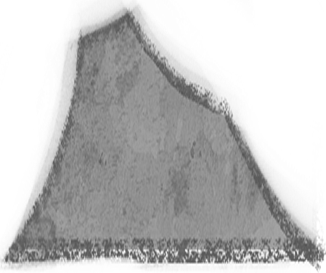
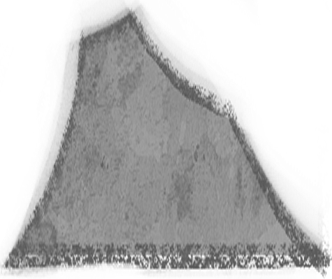
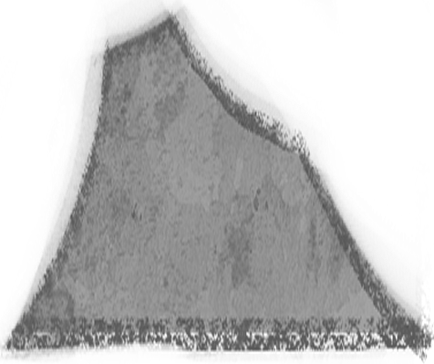

Bienvenue !
Tu as déjà visité notre site et tu veux accéder à l'espace communautaire ?
Tu as déjà visité notre site et tu veux accéder à l'espace communautaire ?
Je suis Jacques Servotte, né le 26 septembre 1949 à Franière, dans la
basse-Sambre, entre Charleroi et Namur. Je suis sculpteur, sérigraphe, céramiste, écrivain… autant de formes d’expression qui nourrissent mon travail artistique.
Continue sur la page pour en apprendre plus sur moi !
Voici quelques informations sur l'histoire de mon œuvre !
J’ai intitulé cette œuvre *Atèlé*, un mot qui désigne "celui qui s’attelle à une tâche longue et difficile".
Elle est née de cette idée : le travail exigeant, la persévérance, la volonté de se dépasser.
Aujourd’hui, elle se dresse à Namur, au carrefour des rues des Carmes et des Croisiers.
Elle est née de cette idée : le travail exigeant, la persévérance, la volonté de se dépasser.
Aujourd’hui, elle se dresse à Namur, au carrefour des rues des Carmes et des Croisiers.
C’est une sculpture imposante, en bronze, de plus de deux tonnes, mesurant 96 x 100 x 103 cm, avec une plaque de 40 x 12 cm, pour une hauteur totale de 136 cm.
Mais plus que son poids ou ses dimensions, c’est le message qu’elle porte qui m’importe.
Avec Atèlé, je veux lancer un appel clair : maîtrise-toi, dépasse-toi, ose agir. Elle parle de courage et de ténacité, des valeurs essentielles à mes yeux.
Ce message a trouvé un écho : l’œuvre a reçu le prix Namosa en 2021, ce qui a été pour moi une belle reconnaissance.
Mais plus que son poids ou ses dimensions, c’est le message qu’elle porte qui m’importe.
Avec Atèlé, je veux lancer un appel clair : maîtrise-toi, dépasse-toi, ose agir. Elle parle de courage et de ténacité, des valeurs essentielles à mes yeux.
Ce message a trouvé un écho : l’œuvre a reçu le prix Namosa en 2021, ce qui a été pour moi une belle reconnaissance.
Je représente ici un homme accroupi, le corps tendu, courbé, entièrement mobilisé autour d’un fardeau lourd.
Sa posture traduit un engagement total, physique et intérieur. La sphère, lisse et sans prise, symbolise la vie et la société : complexes, pesantes, insaisissables.
Ce combat, c’est celui de la résilience, du dépassement de soi, de la force qu’on puise pour avancer malgré tout.
J’ai voulu évoquer aussi Atlas portant le ciel, et Sisyphe face à son rocher.
Des figures qui incarnent, comme mon personnage, la persistance, l’acte de tenir bon, même dans l’épreuve.
Sa posture traduit un engagement total, physique et intérieur. La sphère, lisse et sans prise, symbolise la vie et la société : complexes, pesantes, insaisissables.
Ce combat, c’est celui de la résilience, du dépassement de soi, de la force qu’on puise pour avancer malgré tout.
J’ai voulu évoquer aussi Atlas portant le ciel, et Sisyphe face à son rocher.
Des figures qui incarnent, comme mon personnage, la persistance, l’acte de tenir bon, même dans l’épreuve.
À travers Atèlé, je prône clairement le dépassement de soi.
Le message est simple, mais essentiel :
ne jamais cesser de lutter. Comme Sisyphe, condamné à pousser son rocher sans fin, mon personnage incarne le combat permanent de l’existence.
Cette œuvre nous rappelle que, malgré l’absurde ou la fatigue, il faut continuer à avancer.
Le message est simple, mais essentiel :
ne jamais cesser de lutter. Comme Sisyphe, condamné à pousser son rocher sans fin, mon personnage incarne le combat permanent de l’existence.
Cette œuvre nous rappelle que, malgré l’absurde ou la fatigue, il faut continuer à avancer.
Continuons nos explications, prochains arrêt les montagnes !
Je me suis inspiré de deux figures mythologiques fortes : Sisyphe et Atlas.
Dans le récit de Camus, Sisyphe défie les dieux en enchaînant la Mort pour que les hommes ne meurent plus. Mais, une fois la Mort libérée, Sisyphe s’échappe des Enfers par une ruse.
Pour le punir, les dieux le condamnent à pousser un rocher sans fin jusqu’au sommet d’une montagne, où il retombe à chaque fois. Camus voit en lui le héros absurde, qui malgré une tâche sans sens, embrasse la vie et refuse la mort.
Dans le récit de Camus, Sisyphe défie les dieux en enchaînant la Mort pour que les hommes ne meurent plus. Mais, une fois la Mort libérée, Sisyphe s’échappe des Enfers par une ruse.
Pour le punir, les dieux le condamnent à pousser un rocher sans fin jusqu’au sommet d’une montagne, où il retombe à chaque fois. Camus voit en lui le héros absurde, qui malgré une tâche sans sens, embrasse la vie et refuse la mort.
Atlas, quant à lui, est condamné par Zeus à soutenir le ciel sur ses épaules, après la défaite des Titans lors de la Titanomachie. Il devient Atlas Télamon, « Atlas endurant », symbole de l’axe céleste et du poids éternel qu’il porte.
Ces mythes incarnent pour moi l’effort constant, la persévérance face à l’absurde, et le courage de porter ce qui semble insupportable.
Ce sont des thèmes que j’explore dans mon œuvre.
Ces mythes incarnent pour moi l’effort constant, la persévérance face à l’absurde, et le courage de porter ce qui semble insupportable.
Ce sont des thèmes que j’explore dans mon œuvre.
Bon allez il est temps de ce rendre dans mon atelier !
Bienvenue dans mon atelier !
Vous pouvez observer mes autres oeuvres un peux partout !
Vous pouvez observer mes autres oeuvres un peux partout !
Parmi mes créations, Atèlé illustre le courage.
Mais mon travail explore aussi d’autres thèmes à travers des pièces comme Mendicité, Spectateurs, Amour toujours, Égalité, ainsi que des objets du quotidien transformés en œuvres, comme Poubelle de table, Pichet ou Cruche.
Chaque pièce porte une réflexion, une émotion différente, mais toujours avec la même volonté de toucher l’humain.
Mais mon travail explore aussi d’autres thèmes à travers des pièces comme Mendicité, Spectateurs, Amour toujours, Égalité, ainsi que des objets du quotidien transformés en œuvres, comme Poubelle de table, Pichet ou Cruche.
Chaque pièce porte une réflexion, une émotion différente, mais toujours avec la même volonté de toucher l’humain.
Sans plus tarder passons à la dernière étape de notre voyage,
la création de mon oeuvre.
Vous allez avoir un petit questionnaire et si vous y répondez bien, l'oeuvre ce construira !
la création de mon oeuvre.
Vous allez avoir un petit questionnaire et si vous y répondez bien, l'oeuvre ce construira !
">
 


Je t'explique le principe !
Atélè pronne le dépassement de sois, je t'invite à écrire un projet que tu as envies
Cette espace sers d'espace "communautaire", en écrivant ton projet tu pourras voir ceux des autres et inversément !
Atélè pronne le dépassement de sois, je t'invite à écrire un projet que tu as envies
Cette espace sers d'espace "communautaire", en écrivant ton projet tu pourras voir ceux des autres et inversément !